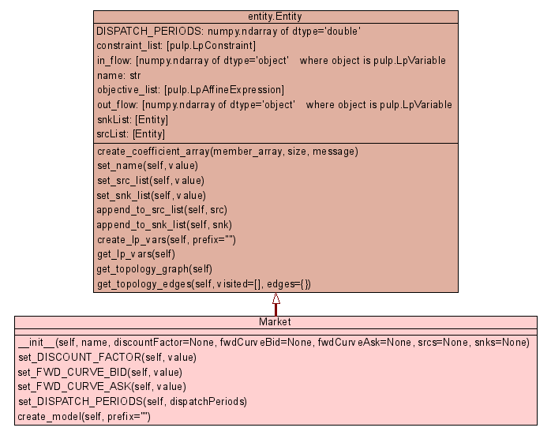

Class Market
source code

The Market entity's sole role is to balance the sum of all
in flows with the sum of all out flows. Typically, the Market
entity is linked to many StandardProduct entities covering the entire DISPATCH_PERIODS with their delivery periods and to one
or more other entities that have some optimisation potential (such as a
Storage, Supplier, Consumer). In most cases, all entities the Market
entity is linked with are linked as source entity as well as sink entity
(but other constellations are possible).
In order to construct a Market
entity that supports volume dependent bid/ask price spreads the Market
entity links, for each standard product delivery period, to a
corresponding StandardProduct entity, that itself links to multiple TradeTranche entities that have
-
restricted capacity limits, and
-
a widening spread between bid/ask prices.
This will cause the optimiser to transact volumes for the given
standard product first at the most favourable trade tranche up to its
upper capacity limit, before the second most favourable trade tranche is
considered, etc. The least favourable trade tranche shouldn't have an
upper capacity limit set and have a punishing bid/ask price spread and
serves as so called 'slack' tranche.
To Do:
Add features to the Market entity that allows check for validity of all
linked to source and sink entities, such as:
|
|
__init__(self,
name,
discountFactor=None,
fwdCurveBid=None,
fwdCurveAsk=None,
srcs=None,
snks=None)
x.__init__(...) initializes x; see x.__class__.__doc__ for signature |
source code
|
|
|
|
|
|
|
|
|
|
|
|
|
|
|
|
|
|
Inherited from entity.Entity:
append_to_snk_list,
append_to_src_list,
create_lp_vars,
get_lp_vars,
get_topology_edges,
get_topology_graph,
set_name,
set_snk_list,
set_src_list
Inherited from object:
__delattr__,
__getattribute__,
__hash__,
__new__,
__reduce__,
__reduce_ex__,
__repr__,
__setattr__,
__str__
|
|
Inherited from object:
__class__
|
__init__(self,
name,
discountFactor=None,
fwdCurveBid=None,
fwdCurveAsk=None,
srcs=None,
snks=None)
(Constructor)
| source code
|
x.__init__(...) initializes x; see x.__class__.__doc__ for
signature
- Parameters:
name - uniqe, non-empty name string of entitysrcs - source entity objectsnks - sink entity object - Overrides:
object.__init__
|
set_DISPATCH_PERIODS(self,
dispatchPeriods)
| source code
|
The length of the dispatchPeriods + 1 will be the number of time steps
in the optimisation. The time grid need not be uniform.
- Parameters:
value - length of the individual dispatch periods in hours. - Overrides:
entity.Entity.set_DISPATCH_PERIODS
|